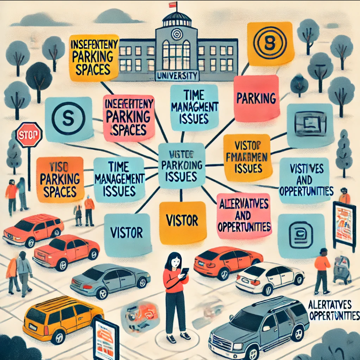

The affinity diagram below illustrates the major challenges and possible solutions related to parking issues at the University of South Carolina. It organizes the problem into key categories, each representing a crucial aspect of the parking problem, such as insufficient spaces, time management, visitor parking challenges, and potential opportunities for improvement.
One potential solution involves integrating infrastructure development with technology. A new multi-level parking garage can significantly increase parking capacity, while a real-time parking availability system can streamline the process of finding available spaces. This system could use sensors in parking spots and a mobile application to guide users directly to open spaces. Additionally, promoting alternative transportation options such as shuttle services, bike rentals, and carpooling programs can further reduce demand for parking.
